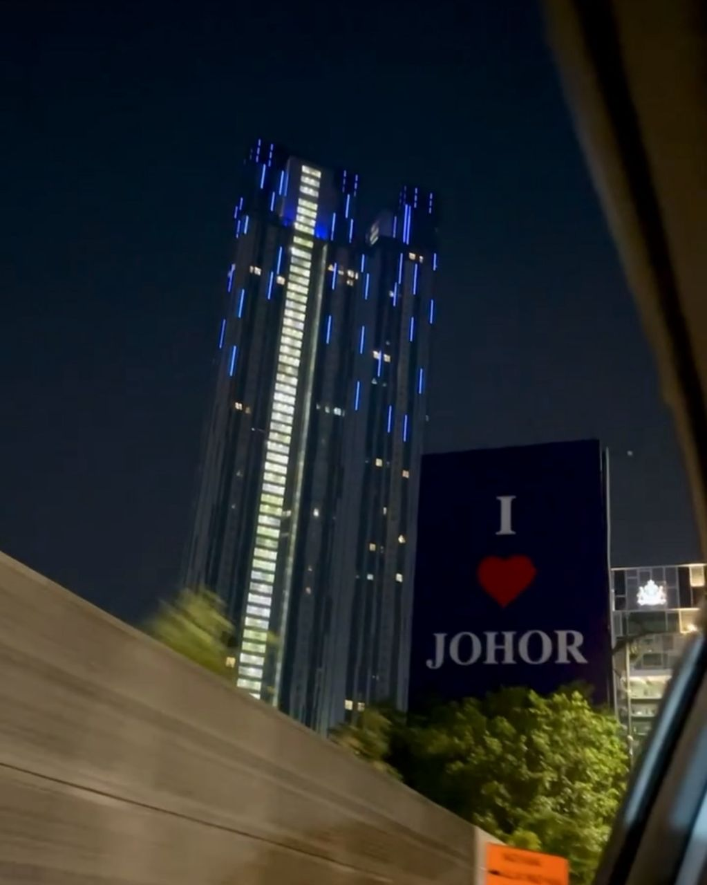

My Hometown üè°
Although I currently live away from home for my studies, both of my parents come from two beautiful places in Malaysia that I love the most üíñ
üèôÔ∏è Johor Bahru, Johor (Mom's Side)
My mother is from Johor Bahru, the capital city of Johor. It's a lively city full of culture, shopping, and amazing food. I always look forward to visiting my grandparents there during holidays. The vibe is a perfect mix of modern and traditional, and it holds a lot of family memories for me. And almost every year we would celebrate Raya in Johor.
üåÑ Taiping, Perak (Dad's Side)
My father is from Taiping, a very calm town in Perak known for its beautiful rain and peaceful atmosphere. I love the Taiping Lake Gardens and the relaxing kampung feel. Every trip to Taiping reminds me of simpler times enjoying nature like going to the river, visiting relatives, and just slowing down for a bit. Taiping is also known as ideal place to settle down after retirement.
These two places represent who I am part of city girl and also part nature lover. I'm proud to have roots in both Johor and Perak üå∏